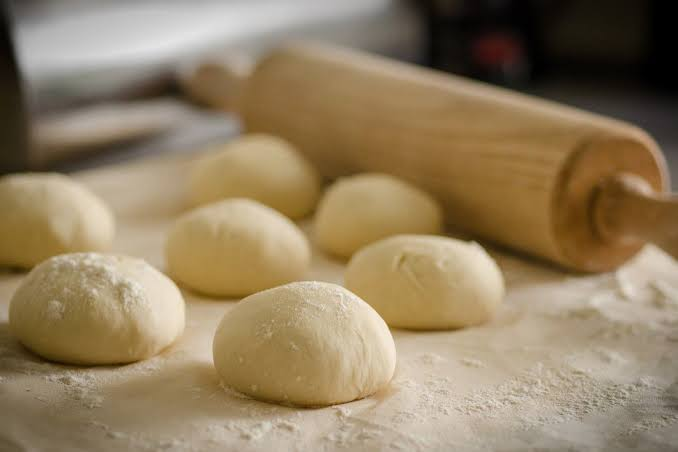

Pizza recipe
Go home

Description
This pizza dough is very easy to put together, and it's enough for four 10-inch-diameter pizzas.
To make it even easier to roll out, prepare it ahead, and refrigerate it overnight. Refrigerated dough will keep
several days. It may also be successfully frozen and thawed. Keeping preweighed individual frozen dough balls on
hand makes it easy to have pizza whenever you like. (Thaw dough overnight in the refrigerator or leave at room
temperature for several hours.)
Ingredients
- 2 teaspoons / 5 grams dry active yeast
- ½ cups / 625 grams all-purpose flour, plus extra for dusting
- 2 teaspoons / 5 grams kosher salt
- 2 tablespoons / 30 milliliters olive oil
Steps
- Put 1 ¾ cups/420 milliliters lukewarm water in a mixing bowl (use a stand mixer or food processor
if you prefer). Sprinkle yeast over water and let dissolve, about 2 minutes.
- Add flour, salt and olive oil and mix well until flour is incorporated and dough
forms, about 5 minutes. It may look a little rough or pockmarked.
- Lightly dust a work surface with flour. Turn dough out onto surface and knead
lightly until it looks smooth, 3 to 4 minutes. Cut dough into 4 equal pieces,
about 8 ounces/225 grams each.
- To use dough, form each piece into a smooth, firm ball,
and place on a flour-dusted or parchment-lined baking sheet. (If you froze the dough, leave it at
room temperature for several hours first, or defrost overnight in the refrigerator.) Flour lightly,
cover loosely with plastic wrap and top with a kitchen towel. Leave to rise in a warm spot until doubled in
size, about 30 minutes. Each dough ball will make a 10-inch diameter pizza.
- If you'd like to refrigerate the dough, wrap dough pieces individually in resealable zipper bags and
refrigerate for several hours or, for best results, overnight; you can also freeze it for future use.
(You can skip this rise in the refrigerator and use the dough right away, but this cool, slow rise makes
it easier to stretch and gives the pizza a crisper texture and more nuanced flavor.)
Disclaimer
This recipe was taken from here
Go home